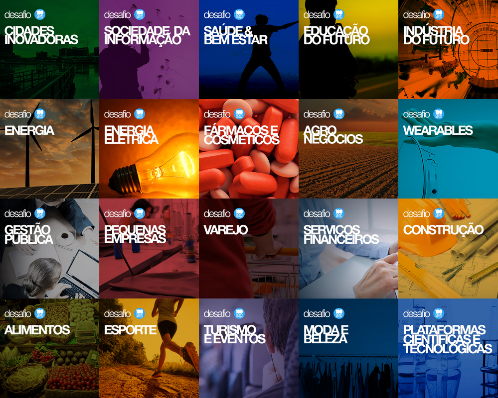

Aula 6
Inovação Aberta
Este curso ajuda você a entender os modelos de negócios abertos e a pesquisa e inovação responsável (RRI) e ilustra como eles podem promover a inovação. No final do curso, você irá:
Inovação Aberta
Inovação aberta é um termo criado para as indústrias e organizações que promovem idéias, pensamentos, processos e pesquisas abertos, a fim de melhorar o desenvolvimento de seus produtos, prover melhores serviços para seus clientes, aumentar a eficiência e reforçar o valor agregado
Fonte: Wikipedia
A inovação aberta pode abranger o gerenciamento e a acumulação de idéias, conhecimentos, licenças, propriedade intelectual, patentes e invenções. Em termos de inovação, pode-se considerar inovação pelo usuário, inovação de marketing, inovação cumulativa e inovação distribuída. Assim, a inovação aberta corresponde a uma série de abordagens de inovação cujo elemento base é a inovação feita além dos departamentos de pesquisa e desenvolvimento das organizações. Em outras palavras, inovação aberta incorpora esforços conjuntos de iniciativas internas à organização e uma possível terceirização ou combinação de várias entradas advindas do ambiente externo, durante o processo de concepção e desenvolvimento dos produtos
Fonte:(Rahman e Ramos, 2010)
Qual o título?
Para além do espírito de abertura em todas as etapas, a inovação aberta tem várias vantagens em usar licenças Creative Commons
Movimento 100 Open Startups
O movimento 100 Open Startups é uma rede que conecta comunidades e competições de startups com desafios e programas de inovação aberta propostos por grandes empresas e grupos de investidores através da criação de um contexto comum e processos de prospecção, combinação e cocriação em rede.
O movimento reúne cerca de 40 grandes empresas em torno de 20 grandes desafios: Cidades inovadoras; Sociedade da informação; Saúde e bem-estar; Educação do futuro; Indústria do futuro; Energia; Energia elétrica; Fármacos e cosméticos; Agro-negócios; Wearables; Gestão pública; Pequenas empresas; Varejo; Serviços financeiros; Construção; Alimentos; Esporte; Turismo e eventos; Moda e beleza; Plataformas científicas e tecnológicas.
Para saber mais, acesse: https://www.openstartups.net/br-pt/
Veja como o Grupo Fleury pode ajudar a desenvolver soluções inovadoras conectadas ao movimento Open Startups.
Vídeo 7 - GRUPO FLEURY | Movimento Open Startups
Fonte: 100 Open Startups.
Saiba mais:
Como leitura adicional, recomendamos o seguinte artigo: